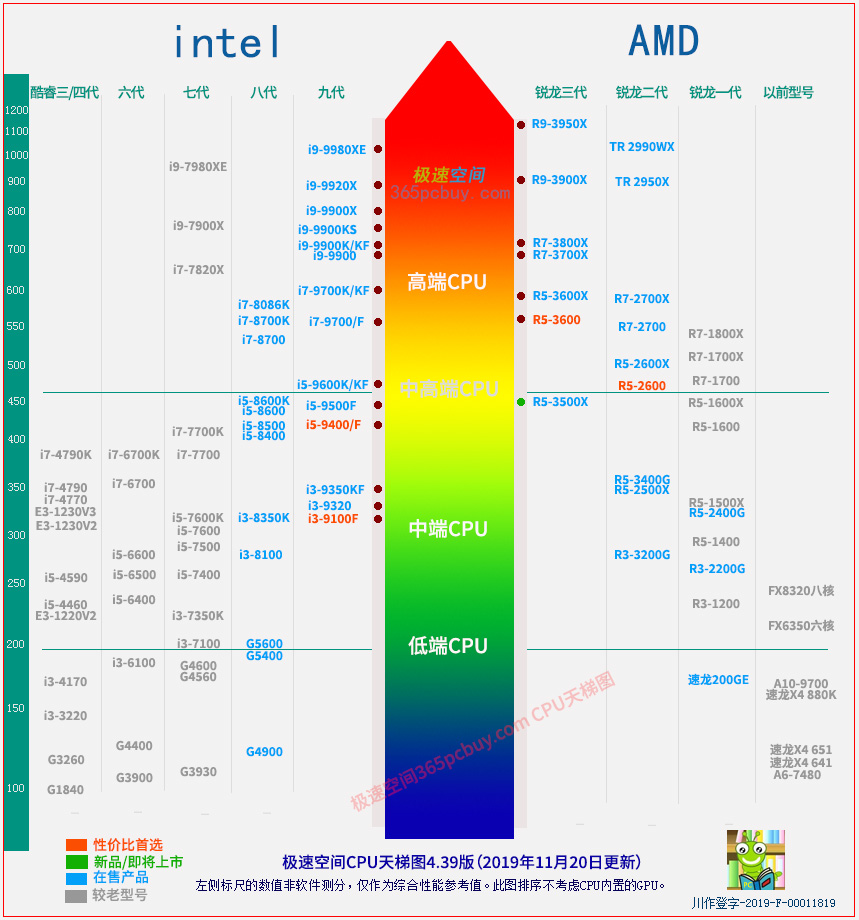

文章标题
发表时间：2019-11-10 文章浏览次数：2165 作者：pc大湿
此文已经于2019年11月20日更新！ 此文从2011年12月30日发表至今有数百万人受益！ 这不仅仅是一张CPU天梯图，也是一篇研究电脑硬件性价比的科普文章！认真阅读让你30分钟从小白到砖家，请细细品鉴！
认真看完此文，你将迅速学到选择高性价比电脑的一些知识。性价比绝不是去挑“便宜的买”，而是“按需购买”，即"不需要的功能不买"，这才是性价比的精髓。比如，有多少人要用"双显卡"?很多人买的大板上不仅有双显卡插槽，另外还有2-3根PCI-E插槽，而99%的人，当电脑都报废了，也没见这些插槽用上（除一个显卡外），为了表面上的豪华去多花几百元完全不值得。

4.39版：修正了R9-3950位置，新增了i9-9900KS，9900X，9920X
此文内容和装机大湿CPU天梯图均为站长pc大湿原创，如需使用此图片，查看规则>>
装机大湿CPU天梯图4.37版解读：
1、ZEN2正式超越intel，但并未完全超越。
处理器的超越主要表现在：核心效率更高，同频下的功耗更低。
AMD官方数据ZEN2的IPC比ZEN提升幅度有两个数据，一个是29%，另一个是15%，前者是与IPC计算相关的特定测试，涉及整数及浮点混合的DKERN + RSA，Zen2架构测试结果是4.53，相比Zen提升了大约29.4%。后者15%就贴近日常应用。ZEN2核心效率已经超过了酷睿九代，这从R7-3700X对比i9-9900K就能看出。虽然基于7nm工艺，ZEN2仍然不敢把频率也拉到5GHz，这说明AMD在功耗控制水平上还输一筹。
2、代数定义：速龙200GE、R3-2200G和R5-2400G严格来说属于锐龙一代，但采用了一些二代的特性。同理，锐龙移动版3000、桌面版3000G系列实际为ZEN+（锐龙二代），并不是三代。
3、排名相同并不意味着在某项应用中表现就相同。少数人一看AMD TR-2990WX和i9-9980XE在一个位置不乐意了，你这图不行，32核和18核在一个位置。实际上，在排序的时候，需要考虑买这个CPU的用户主要用于哪类工作，而不仅仅是用一个软件跑分了事。多核心在跑渲染的时候发挥出色（CINEBENCH R15、V-Ray等应用），但MAYA、UNREAL、PR等反而落后于核心少的i9-9980XE，特别是常用的视频编辑用户常用的PR，i9-9980XE性能会快一倍，这涉及软件对多线程支持度、指令集优化等多方面，简单的按照核心数量去排序会给用户带来很大的误导。
同理，不能认为R5-2600的位置比i5-9400F高，就认为游戏性能更快。
导读：赔了夫人又折兵（二）超过数量临界点，CPU核心越多越慢>>
4、不考虑核显性能。这张图只研究CPU本身性能，不包含CPU内置的GPU（集成在CPU内部的显卡），GPU的性能在【显卡天梯图】反应，只有这样才能清楚明了，这很好理解：一个学生数学好，不能把按照数学语文成绩的总分去判断。
5、指导选购。一些型号虽然暂时还不能算淘汰，但在装机大湿天梯图4.3中仍然标记为灰色。天梯图的最大作用是指导用户选择处理器，标记为灰色其目的是告诉买新机器的用户，这个型号不应该选了。如锐龙1600X和1700等，都有性价比更好的2600和2700可选。